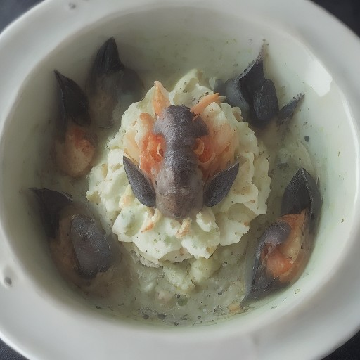

サイド
海藻とクリーミーアボカドの悪魔的グラタン

海藻の旨味が凝縮！クリーミーなアボカドと、濃厚な味わいが融合した、まさに悪魔的！グラタンレシピ！
💡 こんな時・こんな人におすすめ！
特別なディナーに最適！
📋 必要な材料（ポストイット風）
材料リスト 1
- もちもち海藻100g
- クリーミーなアボカド1個
- 生クリーム50ml
材料リスト 2
- マヨネーズ大さじ2
- 醤油大さじ1
- 砂糖小さじ1/2
🍳 作り方ステップ
1
もちもち海藻を水で洗う。
2
アボカドは皮をむき、種を取り除き、食感を出すために小さく切る。
3
生クリーム、マヨネーズ、醤油、砂糖を混ぜ合わせる。
4
海藻をボウルに入れて、アボカドのソースを絡める。
5
オーブンを180度に予熱する。
6
グラタンを型に入れて、180度に予熱したオーブンで10分焼く。
7
グラタンを焼き上がったら、お好みで刻んだパセリやコショウを振る。
8
お好みで、醤油を少し垂らすと、より悪魔的な味わいに。